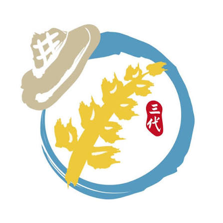
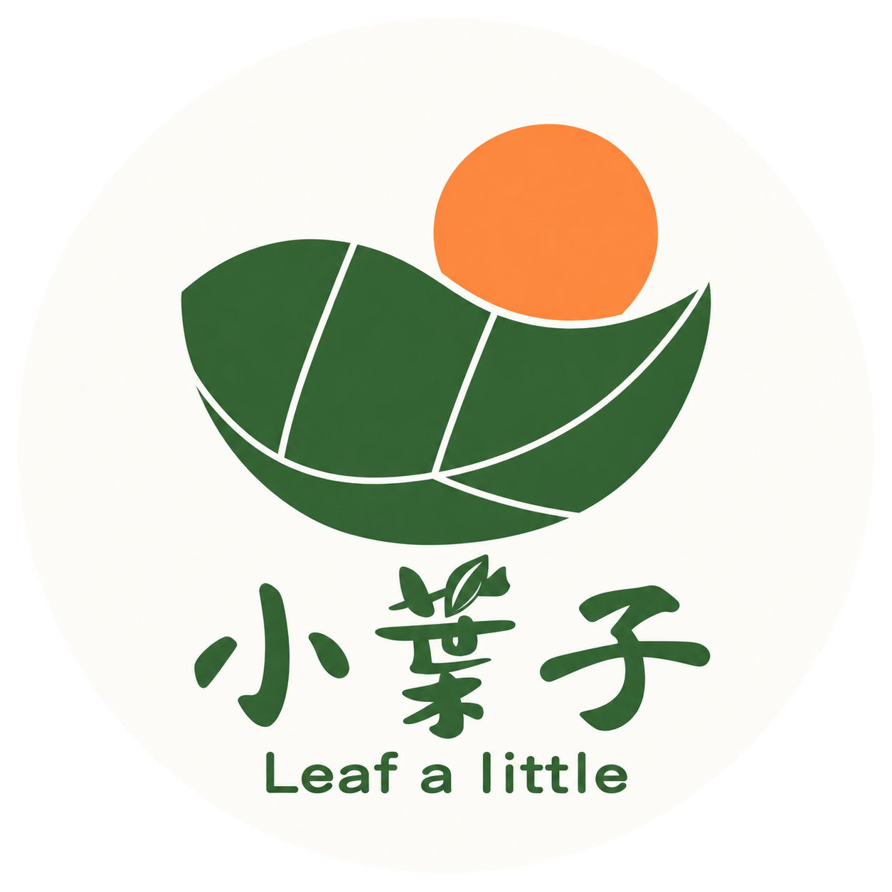
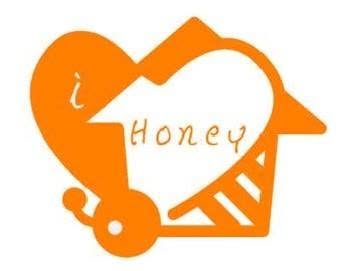
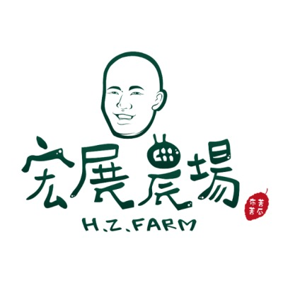
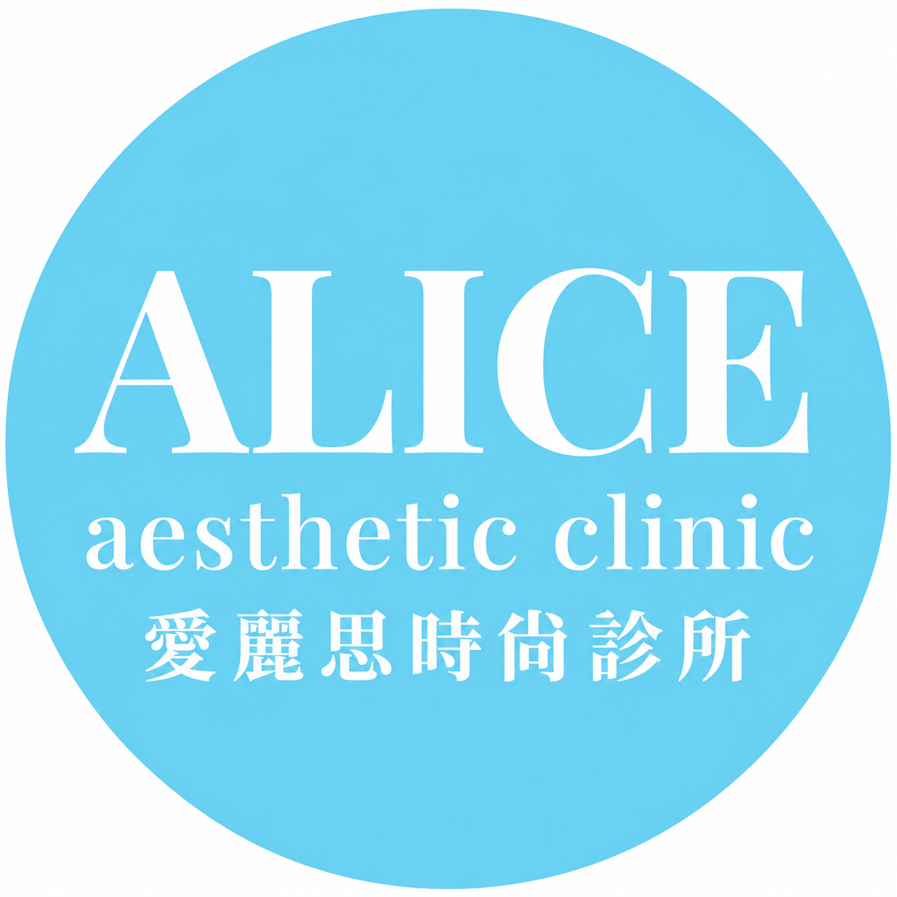
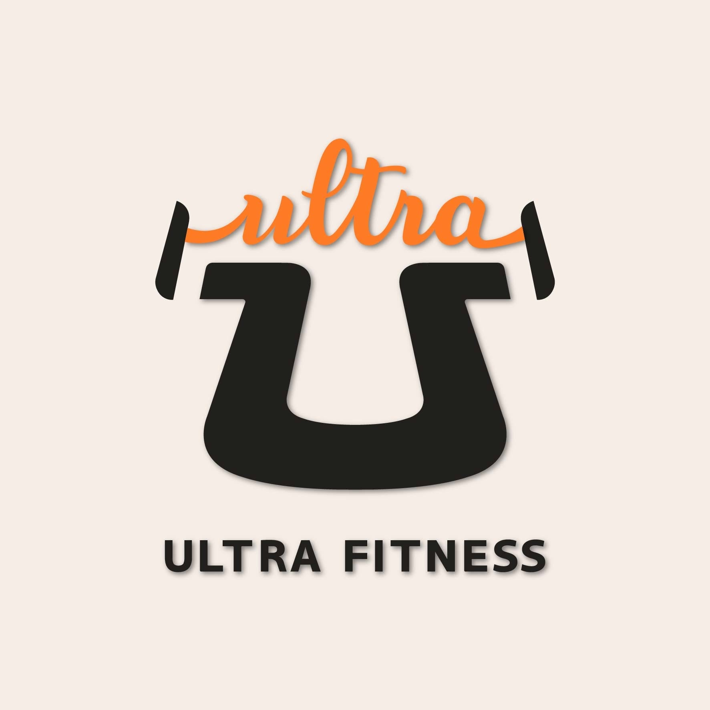

豐滄
桃園大園 · 米食與甘酒2026 年入選第 8 屆百大青農游邵閔 · 個人組官方入選資料 ↗
把米做成好產品，也讓企業知道可以買來送禮。
看企業採購成果 ↗WHY MAKARMA / 5 大特色
從 — 個合作品牌中，看見搜尋如何連結生意。
以上為個別案例的歷史排名與客戶回饋，非成效保證；營收亦受商品、檔期及其他行銷影響。點選案例可查看日期與完整說明。連結對應的客戶如果還沒開啟「顯示於成效展示頁」，點選暫時不會有反應。
REAL BRANDS. REAL PROGRESS.
從 Google 上的一次搜尋，
到 1 通詢問、1 筆訂單，以及品牌的下一步。
從在地服務到企業採購，
讓有需要的客人，找得到你。
GROWING LOCAL BRANDS
從產地故事、產品知識，到節慶送禮與企業採購，
我們幫農友把產品說清楚，讓想買的人找得到、看得懂。

把米做成好產品，也讓企業知道可以買來送禮。
看企業採購成果 ↗
把客家茶的故事說清楚，讓更多人認識在地好茶。
認識品牌 ↗
從養蜂世家的生產故事，說清楚消費者在意的蜂蜜品質。
認識品牌 ↗
從苦瓜怎麼吃到伴手禮怎麼選，讓客人直接找到農場買。
看官網訂單成果 ↗合作期間的實際訂單回饋。
從自行寄信開發，到企業主動詢問客製禮盒。
「近年開始跟台中行銷公司瑪卡鎷合作，減輕了我們很多負擔」— 豐滄創辦人，2026/06 回饋
BEYOND TRAFFIC
LATEST CHAPTER

相較過去最高 200 位，增加約 75%–100%
客人變多了，接下來就能想：怎麼安排合適的療程，讓每位客人的消費再提高。

比去年同期多 196,147 元，年增 32.3%
這是周年慶整體的業績。如果再知道會員從哪裡來，就能看出各種行銷分別幫了多少忙。
THE CLIENT CASEBOOK
先看跟你相近的客戶：原本遇到什麼問題，後來生意有什麼變化。
正在載入案例…